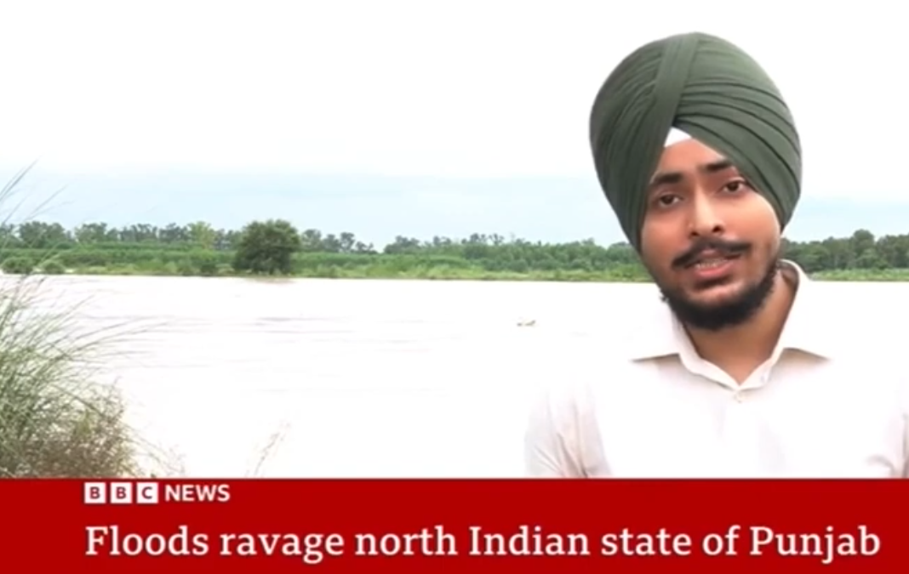
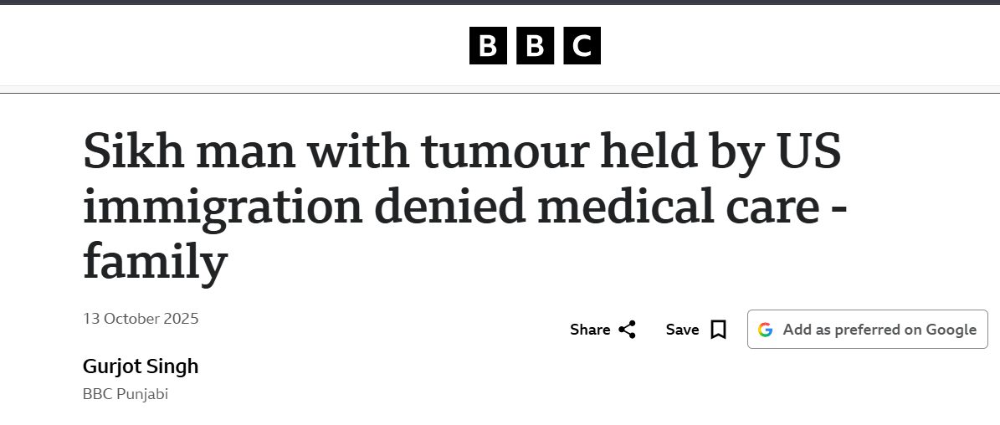

Paradiplomacy: Contrasting Experience of China and India
Comparative analysis of how China and India approach paradiplomacy, subnational actors engaging in international relations.
Report, produce and present video stories for Collective Newsroom (formerly BBC India).

Reported on the Punjab floods for BBC World TV, from the ground.

Original ground report on the unlikely following the global K-pop band BTS has built among young fans in Punjab's villages and towns, timed to the group's reunion after mandatory military service in South Korea.

On-the-ground video coverage of the Cockroach Janta Party protest.

Follow-up video coverage from the Cockroach Janta Party protest.

On-the-ground video report filed for BBC's Hindi language service.

Comparative analysis of how China and India approach paradiplomacy, subnational actors engaging in international relations.
Second part of the analysis, continuing the comparison between Chinese and Indian approaches to paradiplomacy.
Review of Christopher Snedden's "Understanding Kashmir and Kashmiris" (Hurst and Company, 2015).
I write personal essays on my Substack, Rivers Do Speak, weaving together Punjabi pop culture, history, and society.
Off the clock: chasing new places to travel, working through a reading list that currently includes Tolstoy, and slowly teaching myself guitar and French.